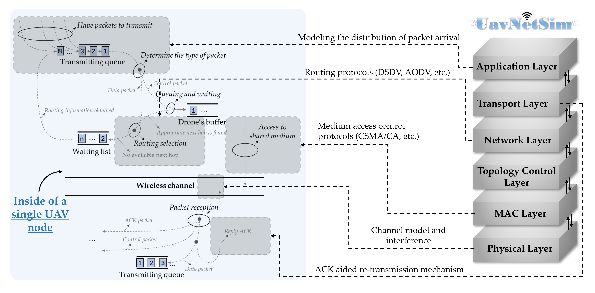

Felix, Zihao Zhou
About me
I am going to start my doctoral career at the Department of Electrical and Electronic Engineering, The University of Hong Kong (HKU), under the supervision of Prof.Yuanwei Liu. Prior to that, I received the B.Eng. and M.Eng. degrees from the School of Eletronic and Information Engineering, South China University of Technology (SCUT), in Jun. 2022 and Jun. 2025, respectively. My recent research focuses on Wireless communications, Mobile networking, UAV communication and Network protocols. I have recently developed a Python-based simulation platform for UAV communication networks named "UavNetSim-v1" [Project link], which provides accurate modeling and simulation of packet transmission within mobile networks, and supports users to design and verify their own protocols and algorithms. I really enjoy my research and if you are interested in my work or have any questions, feel free to reach out via email at eezihaozhou@gmail.com.
Publications
■ Y. Wei, Z. Zhou, J. Tang, N. Zhao, X. Qin and K. -K. Wong,
"An Accurate IEEE 802.11 Packet Delay Model for Single-hop UAV Networks,"
IEEE Transactions on Vehicular Technology, Early Access, 2025. See [Link]
■ S. Huang, J. Tang, Z. Zhou, G. Yang, M. V. Davydov and K. -K. Wong,
"A Q-Learning and Fuzzy Logic based Routing Protocol for UAV Networks,"
in 2024 International Conference on Wireless Communications and Signal Processing (WCSP),
2024, pp. 1090-1095. See [Link]
■ Z. Zhou, J. Tang, W. Feng, N. Zhao, Z. Yang and K. -K. Wong,
"Optimized Routing Protocol Through Exploitation of Trajectory Knowledge for UAV Swarms,"
IEEE Transactions on Vehicular Technology,
vol. 73, no. 10, pp. 15499-15512, 2024. See [Link]
■ Z. Zhou, J. Tang, W. Feng and K. -K. Wong,
"Energy-aware Routing Protocol for UAV Electronic Warfare Using Graph Attention and Fuzzy Reward,”
in 2023 IEEE Global Communications Conference (GLOBECOM),
2023, pp. 1860-1865. See [Link]
■ J. Tang, Z. Zhou, W. Feng and K. -K. Wong,
"A Distributed and Adaptive Routing Protocol for UAV-aided Emergency Networks,”
in 2023 IEEE 98th Vehicular Technology Conference (VTC2023-Fall),
2023, pp. 1-6. See [Link]
■ H. Lin, Z. Zhang, L. Wei, Z. Zhou, T. Zheng,
"A Deep Reinforcement Learning based UAV Trajectory Planning Method for Integrated Sensing and Communications Networks,"
in 2023 IEEE 98th Vehicular Technology Conference (VTC2023-Fall),
2023, pp. 1-6. See [Link]
■ J. Tang, Z. Peng, Z. Zhou, D. K. C. So, X. Zhang and K. -K. Wong,
"Energy-efficient Resource Allocation for IRS-aided MISO System with SWIPT,"
in 2022 IEEE Global Communications Conference (GLOBECOM),
2022, pp. 3217-3222. See [Link]
■ Z. Zhou, S. Wen, Y. Li, W. Xu, Z. Chen and W. Guan,
"Performance Enhancement Scheme for RSE-based Underwater Optical Camera Communication using De-bubble Algorithm and Binary Fringe Correction,"
Electronics,
vol. 10, no. 8, 950-965, 2021. See [Link]
■ Z. Zhou, S. Wen and W. Guan,
"RSE-based Optical Camera Communication in Underwater Scenery with Bubble Degradation,"
in 2021 Optical Fiber Communication Conference (OFC),
2021, pp. M2B-2. See [Link]
Scholarships and awards
• National Scholarship for Graduate Students (2024/10)
• Excellent conclusion of National Innovative Training Project for College Students (2022/05)
• Guangzhou Automobile Group Co., Ltd. donation scholarship (2021/09)
• "Mingwei" Scholarship of School of Electronics and Information Engineering (2021/05)
Interesting projects
Project 1: Python-based Simulation Platform for UAV Communication Networks
This Python-based simulation platform provides a realistic and comprehensive modeling of various components in unmanned aerial vehicle (UAV) networks,
including the network layer, medium access control (MAC) layer, physical layer, as well as UAV mobility and energy models.
Moreover, the platform is highly extensible, allowing users to customize and develop their own protocols to suit diverse application requirements.
